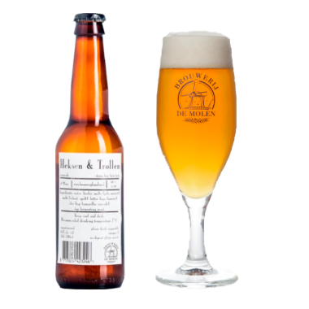

De Mollen
Op & Top
Karamel, med tør humle.
Smag
Gouden Carolus UL.TRA kombinerer den ultimative smag med mindre alkohol. Denne belgiske specialøl er vidunderlig blød og let krydret med en tør eftersmag.
Fylde
Let
Kraftig
Livlighed
Rolig
Livlig
Bitterhed
Lidt
Meget
Serveringsforslag


Fisk
Kylling
Pasta
Op & Top passer bedst sammen med lettere retter såsom fisk og kylling. Den kan også sagtens serveres til lette pastaretter.
| Type: | Belgisk pale ale |
| Alkohol pct.: | 4,5% |
| IBU: | 30 |
| Oprindelse: | Bodegraven, Holland |
| Bryggeri: | De Molen |
| Ingredienser: | Vand, pilsner- og karamelmalt, byg, sladek humle og amarillo humle |
Øllets historie
Det, der gør dette øl interessant, er, at det har en reduceret alkoholprocent, nemlig kun en lille 3,7%, hvilket betyder, at en flaske mere ikke rigtig gør en stor forskel, og du kan nyde det længere! Forkortelsen UL.TRA betyder ultimativ smag, reduceret alkohol.
Vi har fundet andre øl, du måske vil synes om...
PorterHouse
Temple lager
En søde og frugtlignende aromaer.

Het Anker
Het Anker
Carolus Classic
En dyb, sød og maltet smag

Warwik
Bock'en "Blåvand"
Karamelmalt, og humlen er en tjekkisk Saaz.